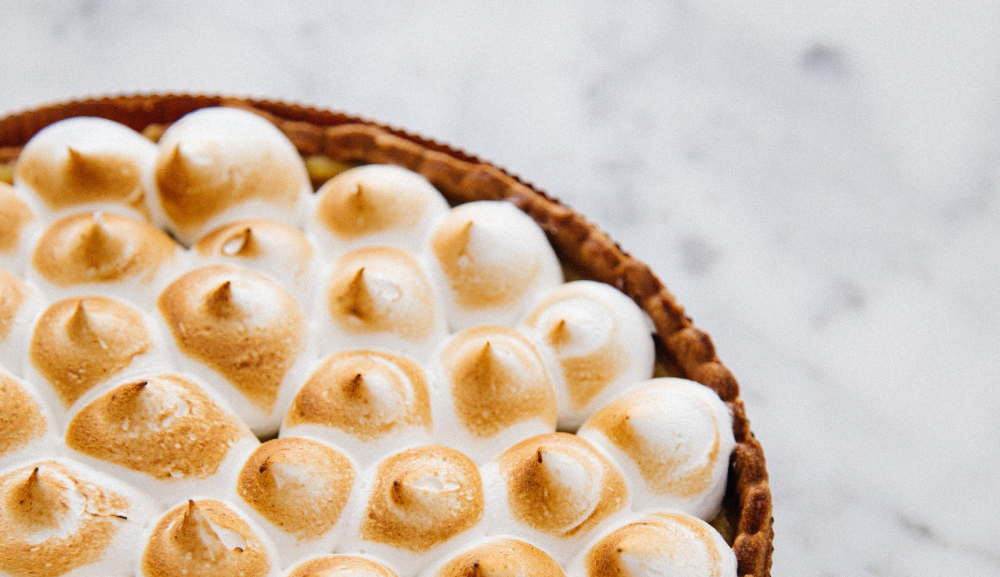

El clasico Lemon Pie
Es el preferido de los que les gusta lo dulce pero no lo empalagoso. El lemon pie es una tarta, es decir, una base de masa y un relleno. Como su nombre lo indica, está hecha con jugo de limón, azúcar y huevos. Todo eso mezclado hace el famoso custard, el relleno cremoso amarillo que es tan típico del lemon pie.
Ingredientes para la masa
- 200g. gramos de harina 0000
- 50g. de azúcar
- 1 huevo
- 100g. de manteca
Ingredientes para la crema
- 150cc. de jugo de limón
- 1 cucharada de ralladura de limón
- 4 yemas
- leche condensada
Ingredientes para el merengue
- 240g. de azúcar
- 3 claras
Instrucciones
- Precalentar el horno a temperatura media (180°C).
- Procesar o mezclar ligeramente la harina, el azúcar y la manteca fría curtada en cubitos, hasta formar un arenado. Agregar el huevo y unir la masa sin trabajarla mucho. Envolver en film y llevar a la heladera por 30 minutos aproximadamente.
- Estirar sobre una mesada enharinada y tapizar un molde para tarta desmontable de 22 cm de diámetro. Cocinar durante 20 minutos o hasta que comience a dorarse.
- Mezclar la leche condensada con 4 yemas, 150cc de jugo de limón e integrar la ralladura. Unir bien y verter sobre la masa precocida. Cocinar en horno moderado durante 15 minutos.
- Colocar el azúcar en una cacerolita y cubrir con apenas con agua. Cocinar hasta obtener la textura de un merengue italiano
- Unos minutos antes del punto del almíbar, comenzar a batir las claras. Cuando empiecen a formar picos, añadir gota a gota el almíbar caliente sin dejar de batir hasta que se enfríe.
- Decorar con el merengue y gratinar.